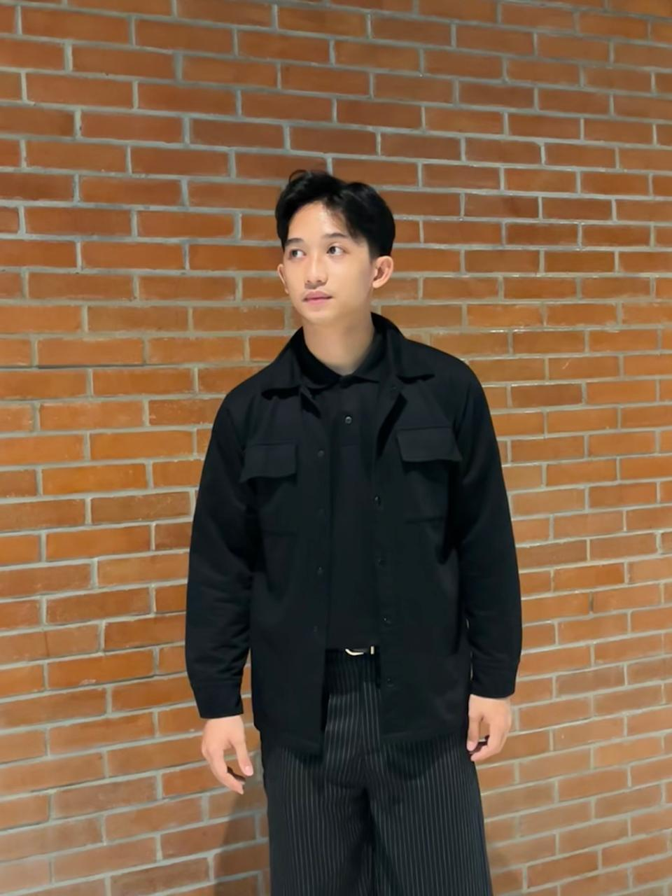
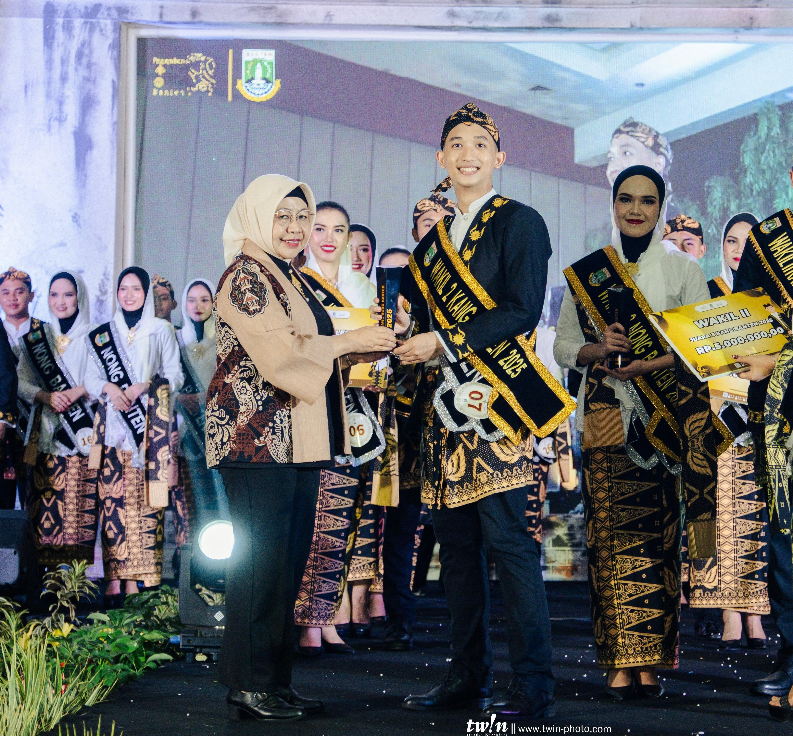

Academics
A glimpse into my academic journey, campus activities, and personal development.
Read more →Creative Talent • Youth Ambassador • Aspiring Software Engineer
I am part of youth-driven communities and creative activities focused on expression and engagement. My experiences as a youth ambassador have shaped how I approach communication and creativity. I am currently exploring technology and software engineering as part of my growth.

I am someone who enjoys learning new things, especially when it challenges me to grow and step out of my comfort zone. I'm naturally curious and open to exploring creative work and technology.
Outside of my studies, I stay active through sports and find balance in music and art. These help shape how I see and approach life. I would describe myself as opportunistic in a positive way and consistently hardworking in what I choose to pursue. My experiences in youth activities and creative environments have shaped how I adapt and grow.
Born in February 2006, based in Indonesia.
A collection of experiences that shaped my skills, creativity, and way of thinking.
A glimpse into my academic journey, campus activities, and personal development.
Read more →Building confidence and creativity through years of involvement in arts, sports, and public performances.
Read more →Exploring opportunities in modeling, public appearances, ambassador roles, and the creative industry.
Read more →Selected highlights from competitions and recognitions.
Represented Banten Province as Wakil II Kang Banten 2025 in a tourism and cultural ambassador platform focused on public speaking, leadership, and regional promotion. Through this experience, I developed stronger confidence, communication skills, stage presence, and the ability to represent ideas professionally in front of diverse audiences and competitive environments.

Received the "Abang Berbakat" title in the Duta Wisata Kota Tangerang Selatan program, recognizing creativity, confidence, and performance throughout the selection process. This experience strengthened my public speaking abilities, stage presence, and confidence in expressing ideas while representing youth and local culture in a professional environment.
Three portfolio categories with sample work and deeper pages for each.

Assignments, university tasks, and coursework projects that explore problem solving, research, and presentation skills within an academic setting.
Read more →Software, web, and IT-focused projects with a practical edge — from planning to build, testing, and delivery.
Read more →Selected modeling and talent work examples, showcasing presentation, styling, and performance experience.
Read more →Have a project, idea, or question? Send a quick email and I'll reply.